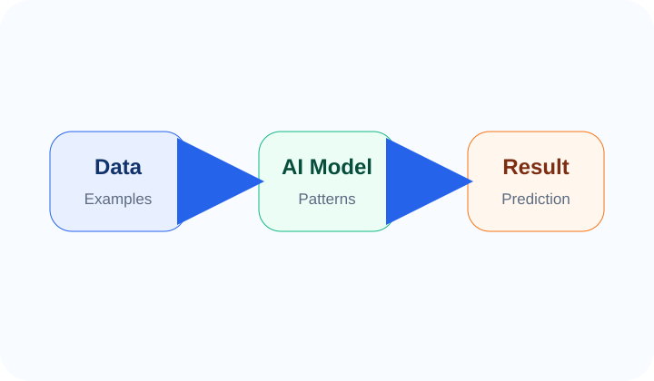

Machine Learning کیا ہے؟
Machine Learning کو examples، patterns اور prediction کے ذریعے سمجھیں۔

Machine Learning کی تعریف
Machine Learning یا ML، AI کا ایک اہم حصہ ہے۔ اس میں computer کو ہر rule manually بتانے کے بجائے examples دیے جاتے ہیں تاکہ وہ data سے pattern سیکھے اور نئے cases پر prediction یا decision دے سکے۔
ایک آسان مثال
فرض کریں آپ کے پاس گھروں کی prices کا data ہے: area، rooms، location، condition، اور final price۔ ML model اس data سے pattern سیکھتا ہے اور پھر کسی نئے گھر کی estimated price بتا سکتا ہے۔ یہ guarantee نہیں، prediction ہے۔
Supervised اور Unsupervised کا آسان تصور
Supervised learning میں examples کے ساتھ correct answers بھی ہوتے ہیں، جیسے email spam ہے یا نہیں۔ Unsupervised learning میں AI data کے اندر groups یا hidden patterns تلاش کرتا ہے، جیسے customers کو behavior کے حساب سے segments میں تقسیم کرنا۔
Machine Learning کہاں استعمال ہوتی ہے؟
ML fraud detection، recommendations، image recognition، speech recognition، customer segmentation، medical support، sales forecasting، hiring tools اور logistics planning میں استعمال ہو سکتی ہے۔
اہم نکات
- Machine Learning AI کا حصہ ہے۔
- ML examples سے patterns سیکھتی ہے۔
- ML prediction دیتی ہے، ہمیشہ guarantee نہیں۔
- Supervised learning میں labeled examples ہوتے ہیں۔
Quick Quiz
جواب select کریں اور check button دبائیں۔